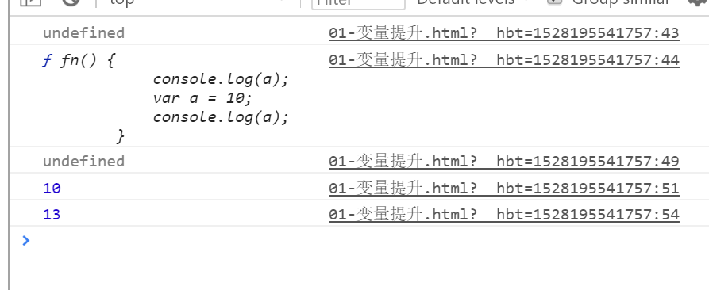

console.log(num);
console.log(fn);
//fn();//->放在前面执行也可以
var num = 13;
function fn() {
console.log(a);
var a = 10;
console.log(a);
}
fn();
console.log(num);
- 1.变量提升 num = undefined , fn=>function(){...}
- 2.代码自上而下执行 ， console.log(num)//undefined
console.log(fn);//function(){...}
- 3.执行fn(),fn()函数的上下文环境中，变量提升 a=>undefined,
- 4.代码自上而下执行 :console.log(a);//undefined
- 5.a=10;console.log(a);//10
- 6.console.log(num);//13
